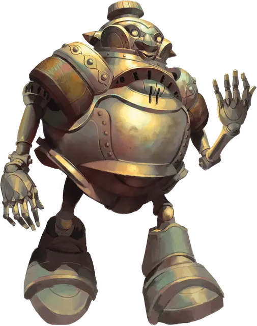

Автогном
Autognome
Маленький Конструкт, любое мировоззрение

Класс Доспеха 16 (природный доспех)
Хиты 39 (6к6 + 18)
Скорость 20 футов
| мод | спас | ||
|---|---|---|---|
| СИЛ | 13 | +1 | +1 |
| ЛОВ | 6 | −2 | −2 |
| ТЕЛ | 16 | +3 | +5 |
| мод | спас | ||
|---|---|---|---|
| ИНТ | 4 | −3 | −3 |
| МДР | 11 | +0 | +2 |
| ХАР | 6 | −2 | +0 |
Иммунитет к урону яд
Иммунитет к состояниям окаменение, отравление, паралич
Чувства тёмное зрение 60 футов, пассивное Восприятие 10
Языки Общий, Гномий
Опасность 2 (450 опыта)
Бонус мастерства +2
Особенности
Неисправность. Каждый раз, когда автогном получает 15 или более повреждений от одного источника и его хиты не уменьшаются до 0 из-за этого повреждения, бросьте к20, чтобы определить, есть ли у него неисправность:
1–10: «Всё в порядке!». Неисправности не возникает.
11–12: «Я чувствую, как рассудок покидает меня.». Автогном становится недееспособен на 1 минуту.
13–14: «Вы меня обезоружили!». Одна из рук автогнома отваливается, уменьшая количество атак Шоком, которые он может совершить, на 1 до тех пор, пока существо действием не прикрепит руку.
15–16: «Кто выключил свет?». Голова автогнома падает и деактивируется, вызывая ослепление и оглушение автогнома до тех пор, пока существо не использует действие, чтобы снова прикрепить голову, что реактивирует её.
17–20: «Волшебного вам дня!». Автогном взрывается и уничтожается. Каждое существо в пределах 20 футов от взрывающегося автогнома должно совершить спасбросок Ловкости Сл 11, получая 22 (4к10) рубящего урона при провале или половину этого урона при успехе.
Необычная природа. Автогном не нуждается в воздухе, еде, питье и сне.
Действия
Мультиатака. Автогном совершает две атаки Шоком.
Шок. . Рукопашная или дальнобойная атака оружием: +3 к попаданию, досягаемость 5 футов или дальность 60 футов, одна цель. Попадание: 7 (2к6) урона электричеством.
Описание
Автогном — это механический гном, напоминающий создавшего его скального гнома, хотя его трудно принять за живого представителя расы. Вне зависимости от начинки, у него внешний металлический корпус, с нарисованными отличительными чертами гномов. Куда бы ни завела его скованная походка — он всегда лязгает, хрипит, жужжит и гудит.
Правильно функционирующие автогномы подчиняются командам своего создателя. Однако, недостатки конструкции могут привести к тому, что автогномы выйдут из-под контроля, забудут свои приказы и будут скитаться по Дикому космосу, делая все, что угодно, кроме того, для чего они были созданы.
Автогномы не обязательно сделаны из одинаковых материалов. Их разум обусловлен вложенной в них магией. Большинство автогномов запрограммированы на выполнение следующих трех указаний: защищать гномов, подвергшихся атаке не-гномов, самозащищаться и защищать от вреда младенцев и детей. Последнее указание возникло из лучших побуждений и для него неважен вид существа. Например, если автогномы увидят как группа взрослых сражается с вирмлингом лунного дракона [lunar Dragon Wyrmling], то гномы будут защищать дракона.